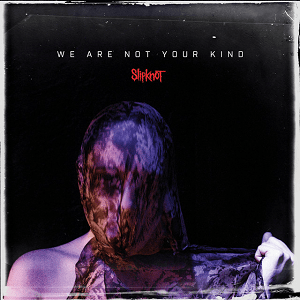

We Are Not Your Kind (с англ. — «Мы не такие, как вы») — шестой студийный альбом американской метал-группы Slipknot, вышедший 9 августа 2019 года на лейбле Roadrunner Records. Альбом был спродюсирован Грегом Фидельманом и является первым альбомом группы после The Gray Chapter в 2014 году. Это первый альбом группы, в котором не принимал участие перкуссионист Крис Фен (за исключением песни «All Out Life», представленной на альбоме бонус-треком), так как он был уволен из группы в марте. Первый сингл «Unsainted» был выпущен 16 мая 2019 года вместе с музыкальным клипом, в котором были представлены новые образы и маски участников. Название альбома взято из текста песни «All Out Life», выпущенной 31 октября 2018 года. Сама песня на альбоме представлена бонус-треком в японском издании.
Реакция СМИ на We Are Not Your Kind была исключительно положительной, альбом получил всеобщее признание критиков. Многочисленные рецензенты назвали альбом одним из лучших релизов в карьере Slipknot, высоко оценивая уровень экспериментов, представленных на нескольких ключевых песнях. Другие отметили это как знаковый выпуск в жанре метал. Сингл «Unsainted» занял 10-е место в чарте US Billboard Mainstream Rock, в то время как «Solway Firth» также попал в первую десятку британского Rock & Metal Singles Chart. Альбом дебютировал под номером 1 в чартах некоторых стран, включая Великобританию и США.
Список композиций